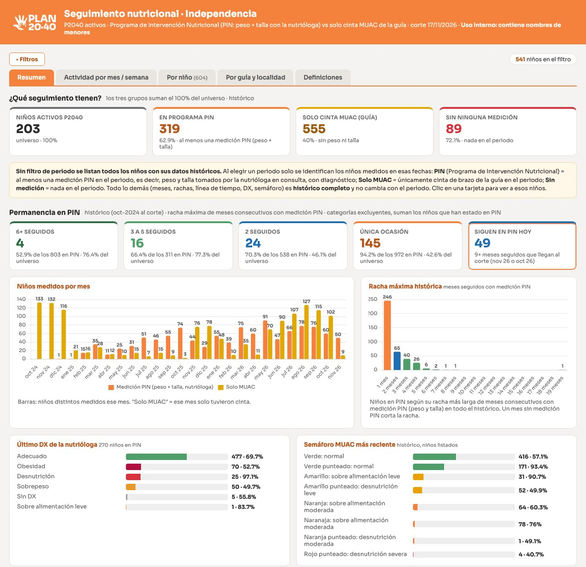
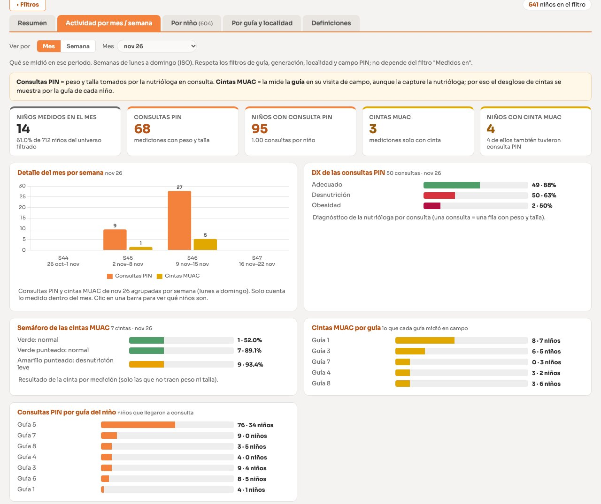
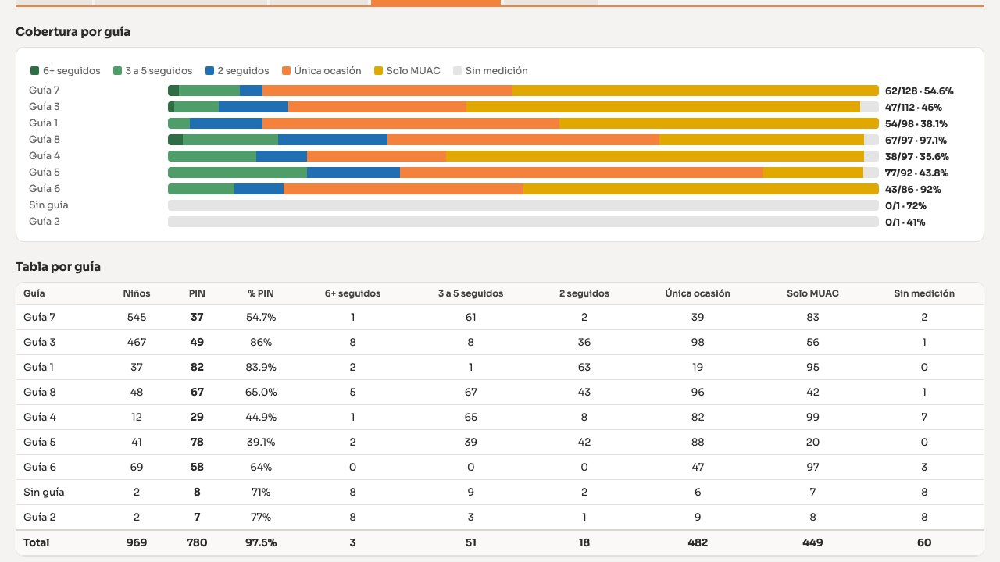

Manual del Seguimiento Nutricional
El seguimiento nutricional de los niños de Independencia: quién se mide, cada cuándo, con qué tipo de medición y cómo sale.
1¿Para qué sirve?
Muestra el seguimiento nutricional de los niños de Independencia: quién está en el programa de la nutrióloga (PIN), quién solo tiene la cinta de brazo de la guía, quién no tiene ninguna medición, cada cuándo se les mide y qué diagnóstico tienen.
Sirve para saber a quién falta medir y quién está dejando de asistir a sus consultas.
2¿De dónde viene la información?
3Dos tipos de medición
| Medición | Quién la hace | Qué da |
|---|---|---|
| PIN (Programa de Intervención Nutricional) | La nutrióloga, en consulta: peso y talla. | Un diagnóstico (DX): adecuado, desnutrición, sobrepeso u obesidad. |
| Cinta MUAC | La guía, en su visita: cinta en el brazo, sin peso ni talla. | Un semáforo. Es un tamizaje: sirve para detectar, no para diagnosticar. |
Con eso, cada niño cae en uno de tres grupos que suman el 100 %: en programa PIN (al menos una medición con peso y talla), solo cinta MUAC o sin ninguna medición.
Permanencia en PIN: para cada niño en PIN se cuenta su racha más larga de meses seguidos con medición PIN, en todo su historial. Un mes sin peso y talla corta la racha. Las categorías son 6+ seguidos, 3 a 5 seguidos, 2 seguidos y única ocasión.
4Cómo moverte en el reporte
- ▸ Filtros abre los filtros: Medidos en (todos, 2026 o 2025), Programa (en PIN, solo MUAC, sin medición), Racha, el campo Programa de intervención de la ficha (sí, no, sin capturar) y Guía.
- Arriba a la derecha dice cuántos niños quedan con los filtros.
- Las pestañas: Resumen, Actividad por mes / semana, Por niño, Por guía y localidad, y Definiciones.
5Recorrido por pestañas
Da clic en una pestaña para ver qué responde y qué mirar primero.
Resumena fondo¿Qué seguimiento tienen los niños?

- ¿Qué seguimiento tienen?: los niños activos y cuántos están en PIN, solo con cinta MUAC o sin medición. Da clic en una tarjeta para ver a esos niños.
- Permanencia en PIN: cuántos niños tienen rachas de 6+, 3 a 5, 2 meses seguidos o una sola ocasión, y cuántos siguen en PIN hoy.
- Niños medidos por mes (PIN y solo MUAC) y racha máxima histórica.
- El último diagnóstico de la nutrióloga y el semáforo MUAC más reciente.
Actividad por mes / semanaa fondo¿Qué se midió en un mes o en una semana?

- Elige Mes o Semana (de lunes a domingo) y el periodo.
- Niños medidos, consultas PIN, niños con consulta PIN, cintas MUAC y niños con cinta.
- El detalle por semana (clic en una barra para ver a los niños), el diagnóstico de las consultas PIN y el semáforo de las cintas.
- Cintas MUAC por guía y consultas PIN por guía del niño. Las cintas se cuentan por la guía de cada niño, aunque las capture la nutrióloga.
Por niño¿Cómo ha sido el seguimiento de cada niño?
- Una fila por niño: su grupo, su permanencia, el campo «programa de intervención», una línea de tiempo de sus meses (con PIN, solo MUAC o sin medición), su último diagnóstico y su último semáforo.
- Da clic en un niño para ver todas sus mediciones. «Descargar Excel» baja la lista.
Por guía y localidada fondo¿Qué guía o localidad tiene más niños sin seguimiento?

- Cobertura por guía: cada barra reparte a los niños de la guía por permanencia en PIN, solo MUAC y sin medición, con el porcentaje que está en PIN.
- La tabla con los mismos números y, más abajo, la cobertura por localidad.
Definiciones¿Qué quiere decir cada término?
Explica PIN, solo MUAC, sin medición, la permanencia, el universo y el filtro de periodo. El campo «programa de intervención» de la ficha no se usa para decidir el grupo porque se captura a mano y puede no estar al día; se muestra aparte para poder cotejarlo.
6Preguntas frecuentes
¿Por qué es solo de Independencia?
Así se construyó: sigue a los niños P2040 de Independencia. Si hace falta uno igual para Cuatro Ciénegas, pídelo con «+ Solicitar reporte» en el portal.
Un niño tiene «Sí» en programa de intervención pero sale sin PIN
El grupo se decide por las mediciones, no por ese campo. Si no tiene ninguna consulta con peso y talla, no está en PIN aunque la ficha diga que sí: revisa la captura.
¿La cinta MUAC sirve para el diagnóstico?
No. Es un tamizaje para detectar a quién hay que medir con peso y talla.